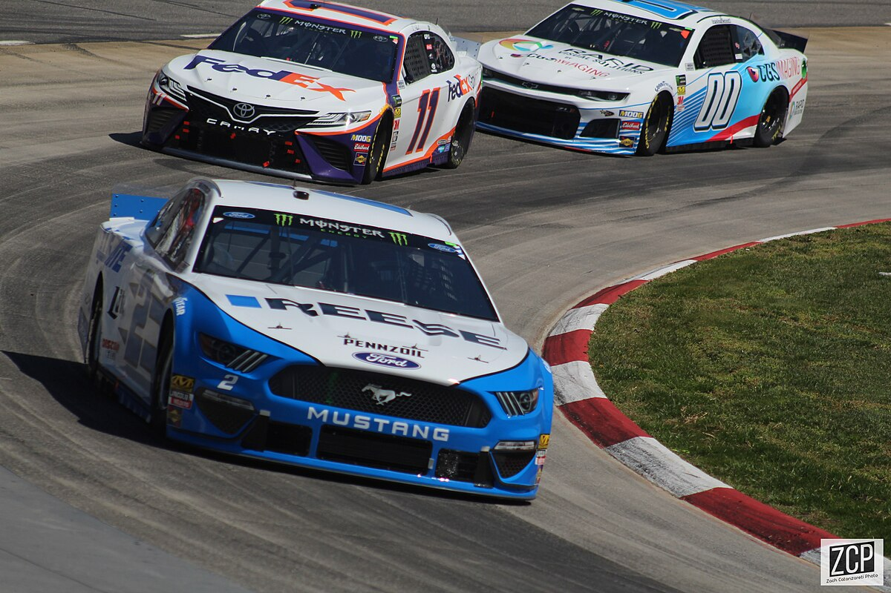

Él era un gran fan de las carreras y quería volverse un corredor pero después de un accidente de coche que casi lo mata decidió abandonar la idea.

Cuando empezó a ver películas clásicas junto a su amigo John Plummer, fue cuando empezó a interesarse por el cine.
Lucas se mudaría a la Universidad del Sur de California, donde estudiaría en la Escuela de Artes Cinematográficas.

Tras graduarse, crearía junto a Francis Ford Coppola una compañía llamada American Zoetrope, donde de 1969 a 1971 crearían su primera película, THX 11138, ahora una película de culto.
Unos meses después crearía Lucasfilm, y en 1977 lanzaría su obra maestra: Star Wars: Una nueva esperanza. A partir de entonces, su carrera iría hacía arriba con películas como las dos trilogías de Star Wars, las películas de Indiana Jones,etc. En 2012 decidiría retirarse y vender Lucasfilm a Disney por 4,050 millones de dólares.